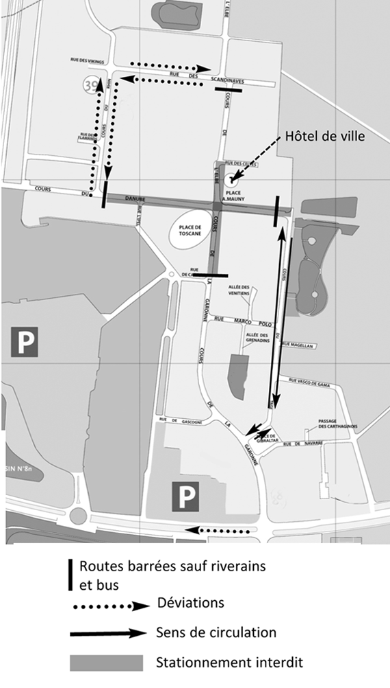

| "DANS LA MAISON", DE FRANÇOIS OZON |
|
| |
Le Film « dans la Maison » de François Ozon (réalisateur de « 8 Femmes » et de « Sous le sable »), sortira dans les salles le 10 octobre prochain, avec notamment à l'affiche Fabrice Luchini et Kristin Scott Thomas.
Ce film a été tourné à Serris, l'an dernier au lycée Émilie du Châtelet, avec la participation de nombreux lycéens. Notre lycée rebaptisé pour l'occasion Gustave Flaubert, est un des principaux lieux de ce long métrage. Le gymnase Olympe de Gouges avait été également utilisé pour le tournage de 2 scènes du film.
L'ocassion pour les Serrissiens de voir les équipements de notre ville sous un autre angle et pour les spectateurs du monde entier de découvrir notre commune. |
|
|
|
|
|
|
| MODIFICATIONS DE CIRCULATION AUX ALENTOURS DE LA PLACE ANTOINE MAUNY, LE MARDI 2 OCTOBRE 2012 |
|
Dans le cadre de nouvelles prises de vues effectuées, le mardi 2 octobre 2012, autour de la place Antoine Mauny, des restrictions de circulation et de stationnement seront mises en place dans les rues situées autour de l'Hôtel de Ville, de 8h00 à 20h00 environ.
Le cours du Tage sera également mis en double sens de circulation ce jour-là (voir plan ci-dessous).
Nous nous excusons par avance pour la gêne éventuelle occasionnée. |

|
|
| INSCRIPTION AU CENTRE DE LOISIRS - VACANCES DE TOUSSAINT 2012 |
|
| Du lundi 1er octobre au vendredi 12 octobre 2012 |
|
Pour l'inscription de vos enfants au centre de loisirs, un dossier est à retirer, à partir du 1er octobre, au service Maëlis de l'Hôtel de Ville ou en téléchargement. Ce dosiser doit être retourné dûment rempli, auprès du service Maëlis, du lundi 1er au vendredi 12 octobre 2012 -
En fonction des places disponibles
> + d'informations sur les modalités d'inscription, d'annulation, de facturation, etc.
Rappel : Le Service Maëlis sera fermé tous les vendredis matins, du 21 septembre au 26 octobre 2012 inclus. |
|
| STAGE MULTI-ACTIVITÉS SPORT/CULTURE |
|
|
À l'attention des 8-11 ans
24 places disponibles
Théâtre : "matchs d'improvisation" animés par Blandine Chaix de l'A.C. Théâtre Val d'Europe
Sport collectifs : Kin-ball, rugby, handball, tchouk-ball
Inscription du lundi 1er au vendredi 19 octobre 2012, auprès du service Maëlis. Retrait des dossiers d'inscriptions à partir du lundi 1er octobre auprès du Service Maëlis à l'Hôtel de Ville.
Tarifs en fonction du quotient familial
> + d'informations |
|
|
|
| OUVERTURE DE LA SAISON CULTURELLE |
|
|
Entrée libre
L'équipe de la Ferme des Communes vous donne rendez-vous pour la présentation de la saison culturelle 2012/2013.
Elle vous fera découvrir toutes les facettes de la nouvelle programmation.
Un moment de convivialité autour d'un apéritif dînatoire ponctuera cette soirée avant de laisser la place au spectacle interprété par Jean-Claude Dreyfus "D'Hommage sans interdit(s)", qui rend un vibrant hommage à Raymond Devos.
> En savoir + |
|
|
|
| d'hommages sans interdit(s) - j.C. DREYFUS |
|
|
Humour
Durée : 1h10
À partir de 10 ans
Tarif : A
www.20h40.com
Jean Claude Dreyfus rend visite à Raymond Devos.
> En savoir + |
|
|
|
|
| Dimanche 30 septembre 2012, 10H00, Hôtel de Ville |
|
À l'occasion des Virades de l'espoir, venez participer à la Marche de l'Espoir.
L'association serrissienne Serris'Balad vous donne rendez-vous à 10h00 devant l'Hôtel de Ville pour une collation offerte par la commune.
Départ à 10 h 15 de Serris et arrivée au gymnase Herzog à Bussy-Saint-Georges vers 12h30.
Distance : 7,9 km.
Participation minimum de 5 euros par personne.
Possibilité de restauration sur place
(au gymnase Herzog
à Bussy-Saint-Georges)
Possibilité de retour en car gratuit à partir de 14 h 00. |
|
|
|
| 2e semi Marathon du Val d'Europe |
|
| Dimanche 30 septembre 2012, 9h00, Château de Chessy |
|
Le dimanche 30 septembre prochain à 9h00 au Syndicat d'Agglomération Nouvelle du Val d'Europe (situé au Château de Chessy - Chessy bourg) sera donné le départ du 2ème semi-marathon du Val d'Europe.
Ouvert à toutes et à tous (né en 1994 ou avant).
> Télécharger le dossier d'inscription
Renseignements : service des sports du SAN du Val d'Europe
> Tél. : 01 60 43 66 26
> sport@valeurope-san.fr
> www.valeurope-san.fr |
|
|
|
| ATT SERRIS PRO B FÉMININE |
|
| Mardi 2 octobre 2012, 20h00, gymnase Éric Tabarly |
|
Championnat de France Pro B féminine saison 2012-2013
L'ATTS Serris reçoit Quimper Cornouaille TT
Entrée libre
> www.attserris.fr |
|
|
|
CONFÉRENCE CULTURELLE :
Le cirque dans les arts plastiques (fin XVIIIe-fin XXe) |
|
|
Entrée libre
Depuis son développement à la fin du XVIIIe siècle, le cirque moderne a inspiré de nombreux artistes : Edgar Degas, Henri de Toulouse-Lautrec Georges Seurat, Kees Van Dong, Pablo Picasso, etc.
Miro, etc.
> En savoir + |
|
|
|
| BOURSE AUX VÊTEMENTS AUTOMNE HIVER |
|
| Samedi 6 octobre 2012, de 9h00 à 17h00 |
|
Vêtements de saison pour toute la famille, en bon état, propres et à la mode.
Les articles de puériculture sont acceptés, si possible avec une notice.
Dépôt : vendredi 5 octobre de 17h30 à 20h30
12 articles maximum par liste
une liste par thème pour chaque déposant
Prix du dépôt fixé à 2,50 € par liste
Gagner du temps en préparant votre liste
Vente : samedi 6 octobre de 9h00 à 17h00 sans interruption
N'oubliez pas votre sac réutilisable !
Renseignements : 06.62.70.58.44
Demander les listes par mail : lebaseli@numericable.fr |
|
|
|
|
Samedi 6 octobre, à 20h00, gymnase Éric Tabarly
Inscription jusqu'au 1er octobre |
|
Soirée organisée par la Ville de Serris et l'association Music Passion
- Orchestre & DJ: HOUNSAVI SALSA ORQUESTA
- Danseurs
- Démonstrations
- Buffet gastronomique
- Menu adulte : 25 euros
- Menu enfant (6-14 ans) : 10 euros
- gratuit pour les moins de 6 ans
Réservation avant�le lundi 1er Octobre 2012
Attention : nombre de places limité.
Réservation effective après le versement du règlement.
Chèque à l'ordre de : Association Musique Passion |
|
|
Renseignements et réservation auprès de l'Association au : 06 25 73 84 64 ou 06 85 47 19 76 ou
06 22 16 56 59 - Règlement à déposer ou envoyer au : 18, rue de l'Érable 77700 Serris
|
|
| petit-bleu et petit jaune |
|
|
Jeune public -
Durée : 0h25
À partir de 2 ans - Tarif : C
Petit-BLEU et Petit-JAUNE évoluent chacun de leur côté dans le cocon familial. Ce n'est que lorsqu'ils décident d'affronter le monde extérieur ensemble qu'ils découvrent à la fois ses richesses et ses obstacles. De retour chez eux ils sont tout vert et affrontent le regard de leurs parents qui ne les reconnaissent pas.
www.succursale101.eu |
|
|
|
|